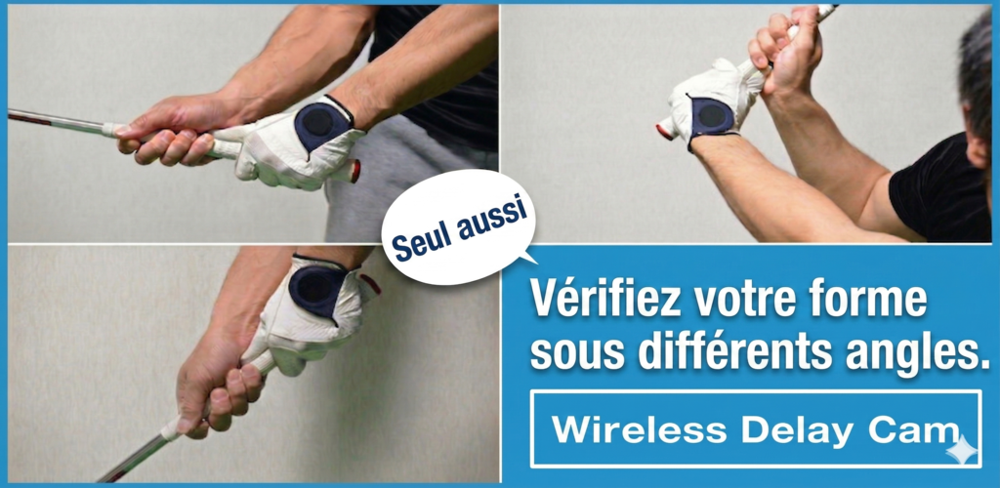
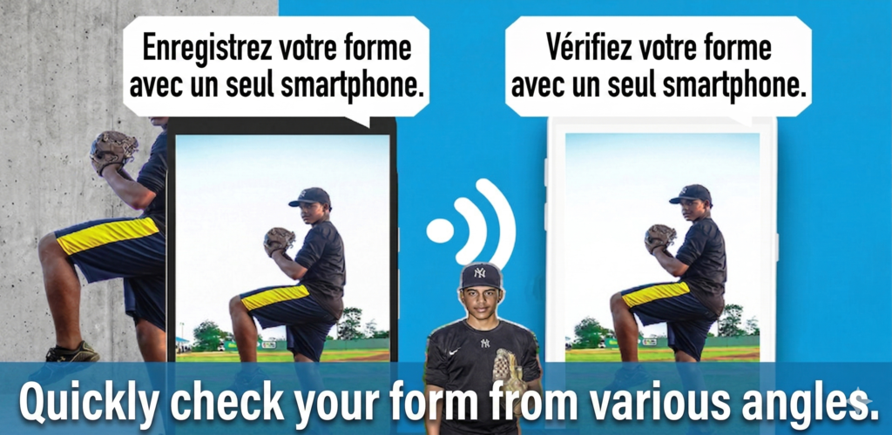
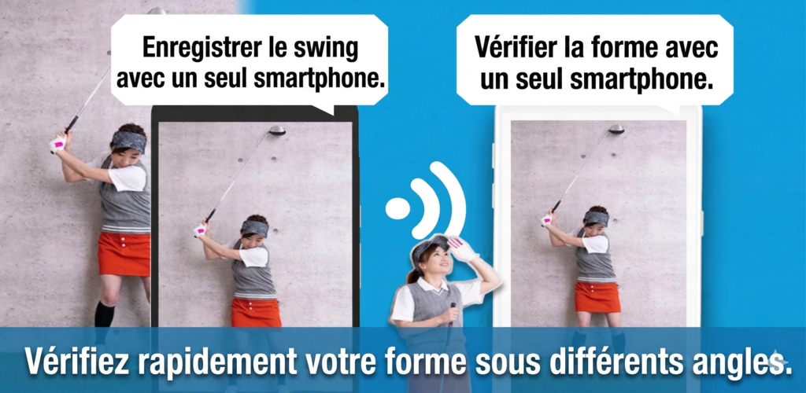
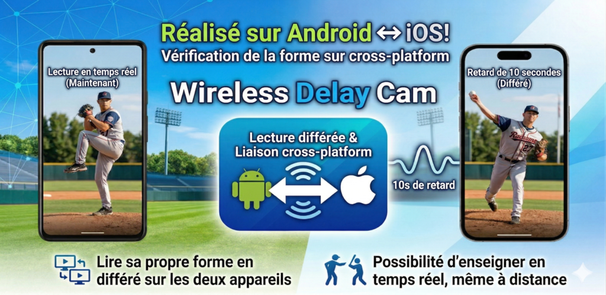

Compatible entre differents OS
Utilisez un iPhone comme camera et un appareil Android comme moniteur, ou inversement. L'application est concue pour les environnements mixtes.
Transfert video sans fil multiplateforme
Wireless Delay Cam connecte les appareils camera et affichage entre iOS et Android. Transmettez une video en direct sans fil sur le meme reseau Wi-Fi ou par tethering, puis connectez rapidement les appareils grace a la detection automatique ou a un QR code.



Fonctions
Utilisez un iPhone comme camera et un appareil Android comme moniteur, ou inversement. L'application est concue pour les environnements mixtes.
Aucun routeur n'est necessaire. Si un appareil cree un reseau partage, la camera et l'ecran peuvent le rejoindre et demarrer le flux.
L'appareil d'affichage peut etre trouve automatiquement sur le meme reseau, ce qui reduit le temps de configuration sur place.
Scannez le QR code de l'appareil d'affichage depuis la camera pour connecter les appareils sans saisir les informations reseau manuellement.
Definissez une latence cote reception pour le monitoring differe, les comparaisons ou certains effets de presentation.
Le recepteur prend en charge le zoom, le miroir et l'enregistrement. L'emetteur peut egalement sauvegarder le flux.
Utilisation
Lancez un appareil comme camera et l'autre comme unite d'affichage.
Utilisez la detection automatique sur le meme Wi-Fi ou associez immediatement les appareils avec un QR code.
Reglez la latence, le debit et l'orientation sur l'appareil d'affichage selon le resultat souhaite.
Visualisez la video recue et utilisez l'enregistrement ou le zoom si necessaire.
Ecrans


Usages
Filmez avec un appareil et verifiez l'image sur un autre, meme si les deux utilisent des systemes differents.
Ajoutez volontairement de la latence pour comparer des mouvements, faire des demonstrations ou produire des effets visuels.
Creez un environnement de monitoring leger sans materiel dedie lorsque des appareils iOS et Android sont disponibles sur site.
FAQ
Non. Une connexion internet externe n'est pas requise tant que les deux appareils se voient sur le meme reseau Wi-Fi ou tethering.
Non. L'application prend en charge a la fois la detection automatique et l'appairage par QR code.
Oui. L'application est pensee pour des combinaisons multiplateformes dans lesquelles l'emetteur et le recepteur utilisent des OS mobiles differents.
Oui. Des options de sauvegarde du flux sont disponibles cote emission et cote reception selon le besoin.